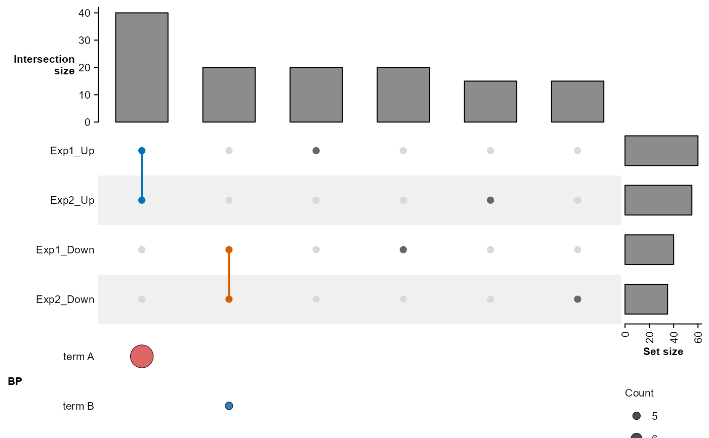
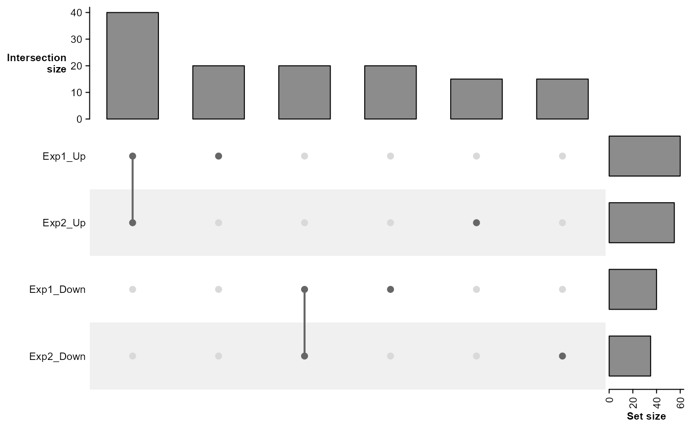

UpSet plot of feature sets with vertically aligned enrichment dot matrix
Source:R/plot_upset_v.R
plot_upset_v.RdDraws a ComplexHeatmap UpSet plot with intersections as columns and a clusterProfiler-style enrichment dot matrix underneath. The two panels use the same intersection order, so each enrichment column is vertically aligned with its UpSet intersection.
Usage
plot_upset_v(
set_list,
enrich_list = NULL,
enrich_category = NULL,
enrich_top_n = 3,
include_all = TRUE,
enrich_rank_by = "p.adjust",
set_order = NULL,
intersection_order = NULL,
intersection_labels = NULL,
intersection_colours = NULL,
fontsize = 8,
dot_size_col = "Count",
dot_colour_col = "p.adjust",
dot_min_size = 1,
dot_max_size = 3,
dot_outline = "black",
dot_outline_width = 0.5,
term_wrap_width = 30,
row_gap_mm = 2,
show_dot_column_names = FALSE,
enrich_term_order = "rank",
enrich_term_colours = NULL,
...
)Arguments
- set_list
A named list of character vectors of feature sets.
- enrich_list
A named enrichment list for intersections, such as the output of
enrichGO_list()$allorenrichR_list(). Each named element should be a data.frame withCluster,Description, and the columns named byenrich_rank_by,dot_size_col, anddot_colour_col. If NULL (default), no enrichment terms are displayed. TheClustercolumn may contain binary combination names or displayed UpSet labels. Displayed labels are auto-generated fromnames(set_list)by joining participating set names with_, and may be overridden withintersection_labels. Whenenrich_categoryis a vector, each category is shown as a separate row section in the enrichment dot matrix.- enrich_category
Category name(s) of enrichment to display: a single string (e.g.
"BP"), or a vector for multiple categories (e.g.c("BP", "CC")). Categories must be present inenrich_list.- enrich_top_n
Top N enrichment terms per intersection. A single integer (default: 3) is recycled for all categories in
enrich_category. Supply an integer vector of matching length for per-category control.- include_all
Whether to include every occurrence of a term selected in any intersection, matching clusterProfiler's
includeAll. (default:TRUE).- enrich_rank_by
Numeric column used to rank enrichment terms within each intersection. A single string (default:
"p.adjust") is recycled for all categories inenrich_category. Supply a character vector of matching length for per-category control.- set_order
Optional order of the sets. When
NULL(default), sets are ordered by decreasing size. Pass a character vector of set names to control display order.- intersection_order
Optional order of intersection columns. When
NULL(default), intersections are ordered by decreasing combination size. Pass a character vector of combination names (as returned byComplexHeatmap::comb_name()), or a numeric permutation of their indices, to specify a custom order.- intersection_labels
Optional named character vector mapping
comb_namebinary patterns to custom intersection names, overriding the auto-generated defaults. E.g.,c("1010" = "Concordant_Up", "0101" = "Concordant_Down"). Entries for patterns not present in the combination matrix cause an error.- intersection_colours
Optional named colour vector for intersections. Names must match the binary combination patterns used by
intersection_labels(e.g."1010"). Colours are used for the intersection bars and combination marks.- fontsize
Base font size. Default is 8.
- dot_size_col
Numeric column used for dot size in the enrichment annotation. Default is
"Count".- dot_colour_col
Numeric column used for dot colour in the enrichment annotation. Default is
"p.adjust".- dot_min_size
Minimum dot radius in mm. Default is 1.
- dot_max_size
Maximum dot radius in mm. Default is 3.
- dot_outline
Outline colour for enrichment dots. Use
NAto remove outlines. Default is"black".- dot_outline_width
Outline width in points. Default is 0.5.
- term_wrap_width
Maximum characters per displayed enrichment term before wrapping to a new line. Default is 30.
- row_gap_mm
Gap between enrichment categories in mm. Default is 2.
- show_dot_column_names
Whether to show intersection labels on the enrichment dot matrix. Default:
FALSE.- enrich_term_order
Controls how to order the enrichment term rows.
"rank"(default) orders terms by their bestenrich_rank_byvalue."intersection"groups terms byintersection_order, with terms within each intersection ordered byenrich_rank_by.- enrich_term_colours
Optional named colour vector for enrichment terms. Names are matched to enrichment
IDvalues when available, and then toDescriptionvalues. Unspecified terms remain black.- ...
Additional arguments passed to
ComplexHeatmap::UpSet().
Details
The binary combination pattern and displayed intersection label are
printed when the function is called. These mappings can be used as keys
for intersection_labels and intersection_colours.
References
Dot matrix mimicking clusterProfiler::dotplot()
Examples
# Mock feature sets with reproducible intersections
genes <- paste0("G", 1:200)
set_list <- list(Exp1_Up = genes[1:60], Exp1_Down = genes[61:100],
Exp2_Up = genes[c(1:40, 101:115)], Exp2_Down = genes[c(61:80, 116:130)])
enrich_list <- list(BP = data.frame(
Cluster = c("Exp1_Up_Exp2_Up", "Exp1_Down_Exp2_Down"),
Description = c("term A", "term B"), p.adjust = c(0.001, 0.04),
Count = c(10, 5)))
intersection_colours <- c("1010" = "#0072B5", "0101" = "#D55E00")
plot_upset_v(set_list, enrich_list = enrich_list,
enrich_category = "BP", intersection_colours = intersection_colours)
#> Intersection pattern to label mapping:
#> 1010: Exp1_Up_Exp2_Up
#> 0101: Exp1_Down_Exp2_Down
#> 1000: Exp1_Up
#> 0100: Exp1_Down
#> 0010: Exp2_Up
#> 0001: Exp2_Down

# Custom intersection order uses the binary combination patterns.
plot_upset_v(set_list,
intersection_order = c("1010", "1000", "0101", "0100", "0010", "0001"))
#> Intersection pattern to label mapping:
#> 1010: Exp1_Up_Exp2_Up
#> 0101: Exp1_Down_Exp2_Down
#> 1000: Exp1_Up
#> 0100: Exp1_Down
#> 0010: Exp2_Up
#> 0001: Exp2_Down
